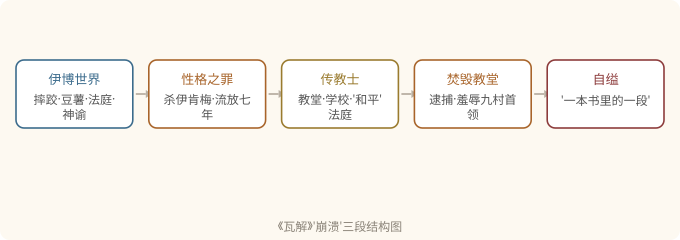

瓦解
一、基本信息
| 作者 | 阿契贝 |
|---|---|
| 成书/出版 | 1958年出版（Britannica） Chinua Achebe — Encyclopaedia Britannica（百科全书） |
| 国别/地区 | 尼日利亚 |
| 时代 | 现当代 · 20世纪 |
| 体裁 | 长篇小说（后殖民经典） |
| 语言 | 英语（夹伊博语） |

二、创作背景
书名（通说）：取自叶芝《第二次降临》'Things fall apart; the centre cannot hold'——旧秩序的崩解。
历史背景：19世纪末尼日利亚东南部伊博族——英国殖民行政与传教团的进入（通说）。
出版：1958年 Heinemann 出版——'African Writers Series'的奠基之作（通说待核）；'things fall apart'被誉为非洲现代文学的开山（Britannica 语境）。
反写的对象：康拉德《黑暗的心》与乔伊斯·凯里笔下的非洲——阿契贝1975年演讲直斥其'种族主义'（通说待核）。
三、内容脉络
第一部分：乌姆奥菲亚村——奥孔寇是'九个村子都认识的'摔跤冠军：三种身份（壮年 wrestling 成名、豆薯农、三个妻子与领养伊肯梅）；他的恐惧是'像父亲一样懒惰、负债、无地位'——以'火'的性格（急躁）撑起家与名（通说）。
秩序的日常：伊博社会的司法（egwugwu 面具法庭）、婚俗、神谕（阿格巴拉）与'周'（神圣周）——一个自洽的文明图谱（通说）。
崩溃的开始：奥孔寇误杀少年流放母村七年；传教士布朗抵达——'白人的神'与伊博信仰的冲突；奈尔之子恩诺巴（Nwoye）皈依（'父亲以为他是女人'——通说）；行政长官以'和平方式'建立'法庭—监狱—鞭笞'的殖民秩序。
结局：奥孔寇归来后率众焚毁教堂（末代审判）；殖民当局以'和平仪式'为名逮捕并羞辱九村首领；释放后村民大会——奥孔寇杀死殖民官吏的差役，无人响应；为免受'白人的审判'他自缢——'在一个部族里自杀是可憎的'——尸体不得葬于祖地（通说细节）；行政长官在《平定下尼日尔地区原始部落的渗入》一书中为其人生写下一页（结尾原文意，待核）——'把他的悲剧写成了一本书里的一段'。
四、主要人物表
| 人物 | 身份 | 说明 |
|---|---|---|
| 奥孔寇（Okonkwo） | 摔跤冠军·三个妻子之夫 | '火的性格'：对'软弱父亲'的反向塑造——恐惧是荣耀的反面（通说） |
| 恩诺巴（Nwoye） | 长子 | '父亲以为他是女人'——转向基督教的儿子（通说） |
| 伊肯梅（Ikemefuna） | 被寄养的少年 | 以'神谕'名义被杀——奥孔寇亲手参与（通说） |
| 布朗先生 | 传教士 | '对话式'的温和殖民——继任者史密斯却不容异见（通说） |
| 尤丘（Ekwefi）、埃吉娜玛 | 妻与女儿 | '爱之最深的女儿'——伊博女性叙事（通说） |
| 行政区专员 | 殖民官员 | 结尾的'一本书的一段'——叙事的殖民者（通说解读） |
五、主题与艺术特点
- 文明的自我毁灭与被毁灭：奥孔寇的悲剧一半是性格一半是历史（通说）。
- '进步'话语的批判：布朗的医院与学校是'进步'，也是瓦解的工具——Britannica：'检视英国帝国主义对尼日利亚传统的冲击'。
- 谚语与叙事的权力：'谚语是黑人吃话语时涂的油'（原文，公有领域）——口传文化的文学化。
- 悲剧的非洲化：希腊悲剧的'缺陷'结构+伊博宇宙观（通说）。
- 艺术特点：英语+伊博语谚语的杂糅、'双写'（殖民者文本的反写——结尾），三部分对称结构。
六、影响与评论
- Britannica（Achebe 条目）：Things Fall Apart (1958) 为其 best known；'检视英国帝国主义对尼日利亚传统的冲击'；2007布克国际奖。
Chinua Achebe — Encyclopaedia Britannica（百科全书） - Britannica：与《再也不得安宁》《神箭》《荒原蚁丘》的写作链。
Chinua Achebe — Encyclopaedia Britannica（百科全书） - 对世界后殖民文学的影响：'非洲现代文学的开山'（通说待核）——2000万册销量（通说待核）。
Chinua Achebe — Encyclopaedia Britannica（百科全书） - 中译：于雷等译《瓦解》（上海译文，通说待核）。
Chinua Achebe — Encyclopaedia Britannica（百科全书）
七、阅读建议
- 伊博语词汇（chi、egwugwu、obiji 等）需注释；谚语的语境化。
- 三部分结构（前殖民/殖民进入/瓦解）的节奏——第三部分短促有力。
- 对'自缢'的文化含义（伊博禁忌）需要注解。
- 于雷译《瓦解》（上海译文出版社，通说待核）：通行本。
- 英文本：Penguin/Heinemann African Writers（通说待核）。
通读三部分 → 精读'伊肯梅之死'与结尾两页 → 对照《黑暗的心》与'An Image of Africa'演讲 → 讨论'文化collision中的自杀'。
八、待核实
- 1958年 Heinemann 出版与首印数（2000册说，通说）待核。
- 于雷译本出版信息待核。
- 伊博谚语的中译对照（原文待核）。
- 布克国际奖2007细节待核。
本页主要来源
阿契贝的其他收录作品：瓦解